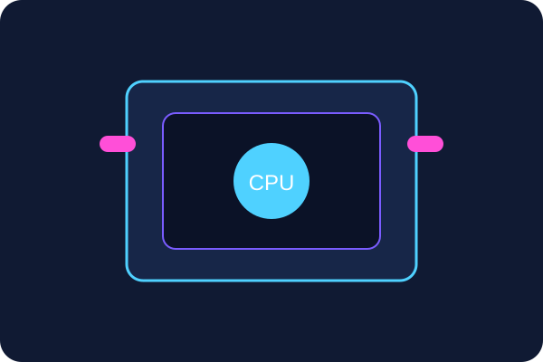
Procesador (CPU)
Es el cerebro del computador. Ejecuta instrucciones, procesa datos y controla las operaciones del sistema.
Unidad 1
La arquitectura del computador permite comprender cómo se organizan sus componentes físicos y cómo los sistemas operativos coordinan su funcionamiento para ofrecer un entorno eficiente y seguro.
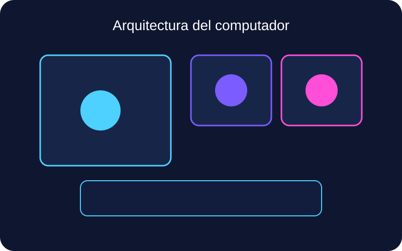
Los componentes del hardware trabajan de manera coordinada para ejecutar instrucciones, guardar información y permitir la comunicación entre dispositivos.

Es el cerebro del computador. Ejecuta instrucciones, procesa datos y controla las operaciones del sistema.
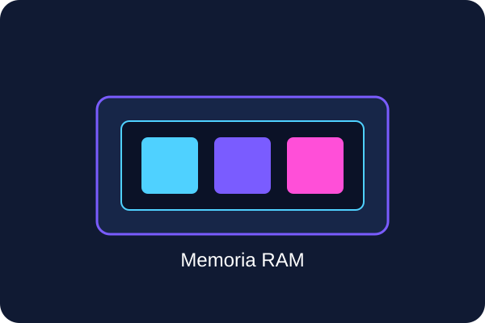
Almacena temporalmente los programas y datos que se utilizan en tiempo real para que el sistema responda con rapidez.
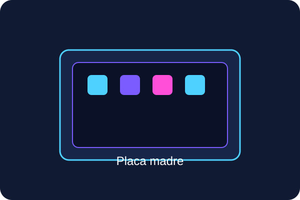
Es la base donde se conectan todos los componentes principales del computador.
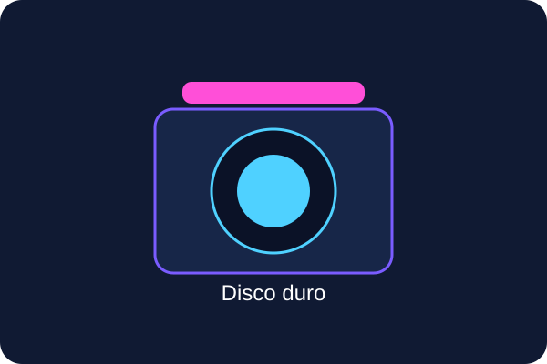
Guarda de forma permanente los archivos, programas y datos del sistema.
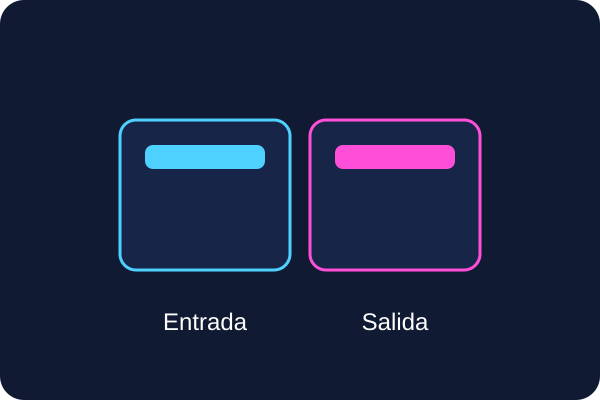
Los dispositivos de entrada permiten enviar información al equipo, mientras que los de salida muestran o entregan resultados.
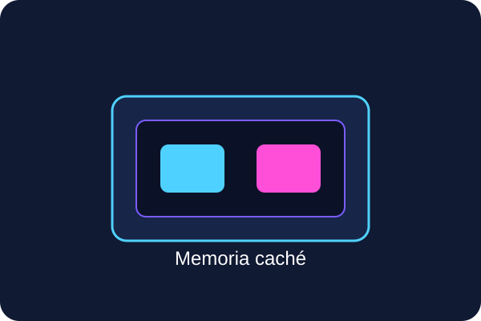
Es una memoria de alta velocidad que almacena datos usados con frecuencia para acelerar el acceso del procesador.
El sistema operativo administra recursos, gestiona programas y facilita la interacción del usuario con la computadora.
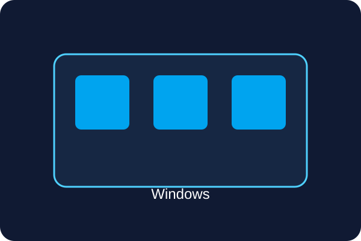
Ofrece una interfaz visual muy intuitiva, compatibilidad amplia con programas y uso generalizado en computadoras.
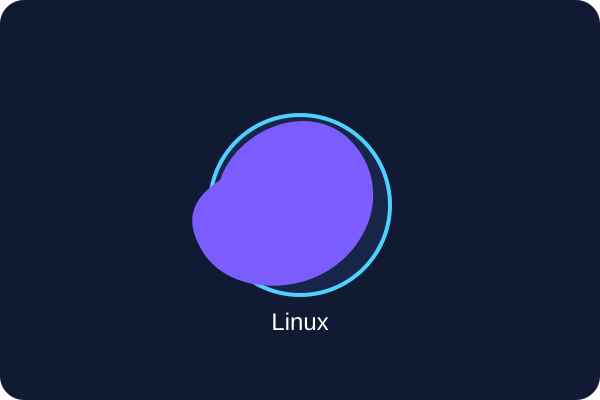
Destaca por ser flexible, estable, de código abierto y muy utilizado en servidores y entornos técnicos.
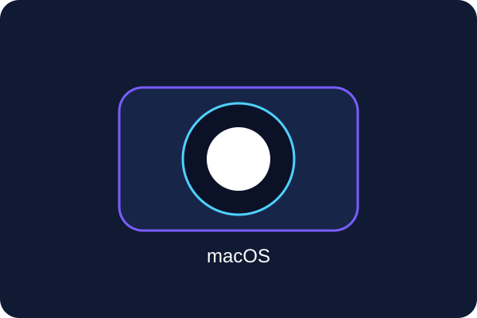
Integra hardware y software de forma muy optimizada, siendo común en equipos Apple.
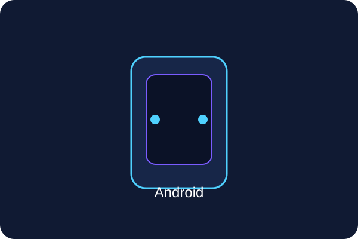
Es un sistema móvil basado en Linux, ideal para smartphones y tablets con gran variedad de aplicaciones.
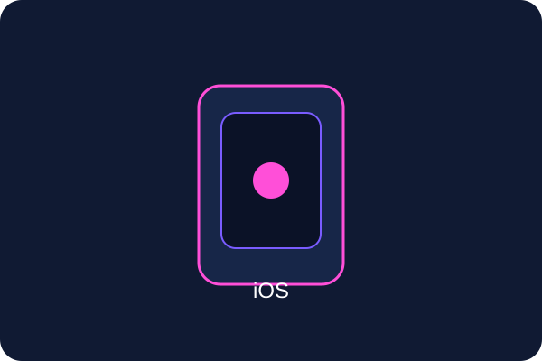
Ofrece una experiencia cerrada, segura y muy fluida en dispositivos Apple.
Representa la relación entre procesador, memoria, almacenamiento y dispositivos externos.
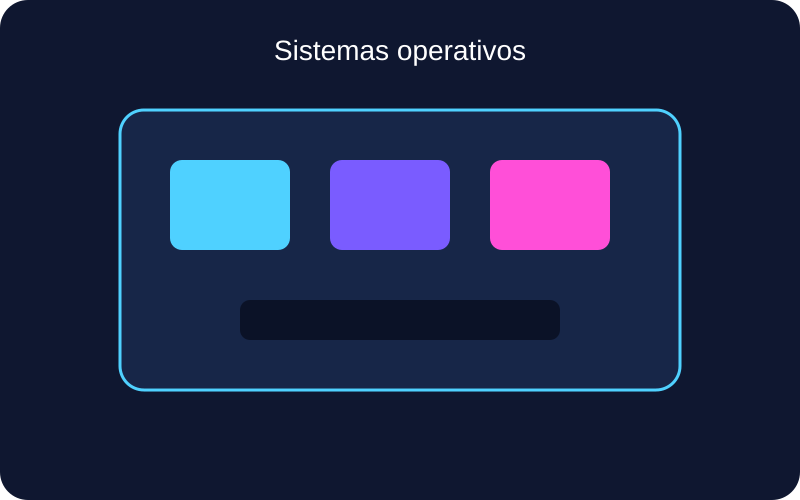
Muestra cómo diversos sistemas permiten administrar recursos y facilitar la interacción del usuario.